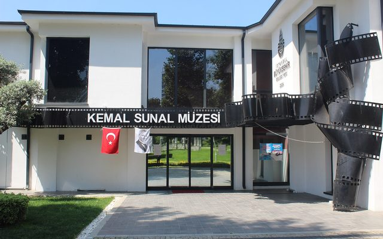
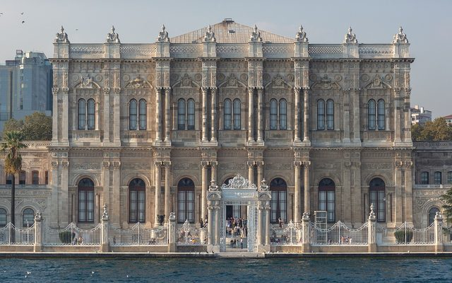
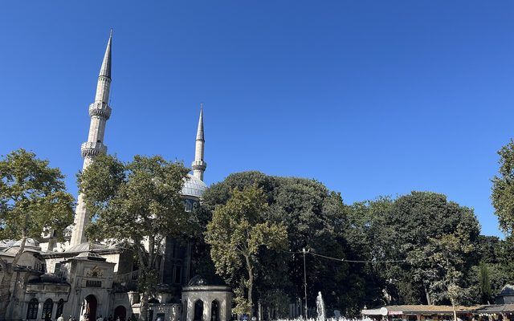
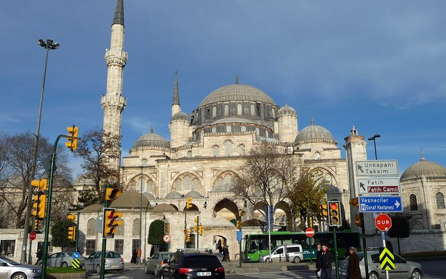

La guía Kültür Varlıkları reúne 89 lugares en Estambul: 52 museo, 21 castillo y edificio histórico, 14 edificio religioso, 2 yacimiento arqueológico. A continuación encontrará lo más destacado, un mapa y la lista completa.
⭐ Lo más destacado

Los Museos Arqueológicos de Estambul, en Gülhane, en los jardines exteriores del Palacio de Topkapı, se fundaron como el primer museo moderno del Imperio otomano.

El Museo de los Mosaicos del Gran Palacio, justo debajo del bazar de Arasta, en Sultanahmet, expone los restos más impresionantes del Gran Palacio donde vivieron…

Abierto en 2010 en un antiguo hangar de Büyükada, narra la historia de las Islas Príncipe: del exilio bizantino a la vida estival con coches de caballos y una comunidad…
🗺 En el mapa
📍 Todos los lugares (89)
Museo (52)
Museos Arqueológicos de EstambulMuseoMuseo de los Mosaicos del Gran PalacioMuseoMuseo de las IslasMuseo Museo Adam MickiewiczMuseo
Museo Adam MickiewiczMuseo Museo Ara GülerMuseo
Museo Ara GülerMuseo ArterMuseo
ArterMuseo Museo MilitarMuseo
Museo MilitarMuseo Museo Atatürk (Şişli)Museo
Museo Atatürk (Şişli)Museo Museo del Cine de Estambul Atlas 1948Museo
Museo del Cine de Estambul Atlas 1948Museo Museo de Historia y Experiencia de Santa SofíaMuseo
Museo de Historia y Experiencia de Santa SofíaMuseo Museo de la Cultura del Hamam de BeyazıtMuseo
Museo de la Cultura del Hamam de BeyazıtMuseo Museo del Vidrio y Cristal de BeykozMuseo
Museo del Vidrio y Cristal de BeykozMuseo Museo de Arte de CendereMuseo
Museo de Arte de CendereMuseo Museo de Arte Contemporáneo ElgizMuseo
Museo de Arte Contemporáneo ElgizMuseo Museo del FenerbahçeMuseo
Museo del FenerbahçeMuseo Museo FethiyeMuseo
Museo FethiyeMuseo Pabellón Marino de Atatürk en FloryaMuseo
Pabellón Marino de Atatürk en FloryaMuseo Museo de la Casa Mevleví de GálataMuseo
Museo de la Casa Mevleví de GálataMuseo Museo Hafıza 15 de JulioMuseo
Museo Hafıza 15 de JulioMuseo
Museo Kemal SunalMuseo Museo Kâzım Karabekir PaşaMuseo
Museo Kâzım Karabekir PaşaMuseo Museo de la InocenciaMuseo
Museo de la InocenciaMuseo Casa Memorial de Mehmet Akif ErsoyMuseo
Casa Memorial de Mehmet Akif ErsoyMuseo MiniatürkMuseo
MiniatürkMuseo Müze GazhaneMuseo
Müze GazhaneMuseo Museo Orhan KemalMuseo
Museo Orhan KemalMuseo Museo Panorama 1453Museo
Museo Panorama 1453Museo Museo PeraMuseo
Museo PeraMuseo Museo Pierre LotiMuseo
Museo Pierre LotiMuseo Museo Rahmi M. KoçMuseo
Museo Rahmi M. KoçMuseo Museo Rezan HasMuseo
Museo Rezan HasMuseo Museo Sadberk HanımMuseo
Museo Sadberk HanımMuseo Museo Sait Faik AbasıyanıkMuseo
Museo Sait Faik AbasıyanıkMuseo Museo Sakıp SabancıMuseo
Museo Sakıp SabancıMuseo SALT GalataMuseo
SALT GalataMuseo Museo de Caligrafía de las Fundaciones TurcasMuseo
Museo de Caligrafía de las Fundaciones TurcasMuseo Museo de Arte Turco e IslámicoMuseo
Museo de Arte Turco e IslámicoMuseo Museo del İş BankasıMuseo
Museo del İş BankasıMuseo Museo Yahya KemalMuseo
Museo Yahya KemalMuseo Fábrica de Porcelana de YıldızMuseo
Fábrica de Porcelana de YıldızMuseo Museo de la Energía santralistanbulMuseo
Museo de la Energía santralistanbulMuseo Museo del Intercambio de ÇatalcaMuseo
Museo del Intercambio de ÇatalcaMuseo Museo de Historia de la Ciencia y la Tecnología en el IslamMuseo
Museo de Historia de la Ciencia y la Tecnología en el IslamMuseo Casa Museo de İsmet İnönüMuseo
Casa Museo de İsmet İnönüMuseo Museo Naval de EstambulMuseo
Museo Naval de EstambulMuseo Museo de Aviación de EstambulMuseo
Museo de Aviación de EstambulMuseo Istanbul ModernMuseo
Istanbul ModernMuseo Museo del Juguete de EstambulMuseoMuseo de Cámaras Hilmi NakipoğluMuseoMuseo de Historia Viva y Dioramas HisartMuseoMuseo del Terremoto de KandilliMuseoMuseo del Aeropuerto de EstambulMuseo
Museo del Juguete de EstambulMuseoMuseo de Cámaras Hilmi NakipoğluMuseoMuseo de Historia Viva y Dioramas HisartMuseoMuseo del Terremoto de KandilliMuseoMuseo del Aeropuerto de EstambulMuseoCastillo y edificio histórico (21)
 Anadolu HisarıCastillo y edificio histórico
Anadolu HisarıCastillo y edificio histórico Pabellón de AynalıkavakCastillo y edificio histórico
Pabellón de AynalıkavakCastillo y edificio histórico Palacio de BeylerbeyiCastillo y edificio histórico
Palacio de BeylerbeyiCastillo y edificio histórico Cisterna de Binbirdirek (Filoxeno)Castillo y edificio histórico
Cisterna de Binbirdirek (Filoxeno)Castillo y edificio histórico Acueducto de Valente (Bozdoğan)Castillo y edificio histórico
Acueducto de Valente (Bozdoğan)Castillo y edificio histórico
Palacio de DolmabahçeCastillo y edificio histórico Pabellón de IhlamurCastillo y edificio histórico
Pabellón de IhlamurCastillo y edificio histórico Pabellón de KüçüksuCastillo y edificio histórico
Pabellón de KüçüksuCastillo y edificio histórico Torre de la DoncellaCastillo y edificio histórico
Torre de la DoncellaCastillo y edificio histórico Pabellones de MaslakCastillo y edificio histórico
Pabellones de MaslakCastillo y edificio histórico Cuartel de Rami (Biblioteca Rami)Castillo y edificio histórico
Cuartel de Rami (Biblioteca Rami)Castillo y edificio histórico Fortaleza de Rumeli HisarıCastillo y edificio histórico
Fortaleza de Rumeli HisarıCastillo y edificio histórico Murallas de TeodosioCastillo y edificio histórico
Murallas de TeodosioCastillo y edificio histórico Palacio de TopkapıCastillo y edificio histórico
Palacio de TopkapıCastillo y edificio histórico Fortaleza de YedikuleCastillo y edificio histórico
Fortaleza de YedikuleCastillo y edificio histórico Cisterna Basílica (Yerebatan)Castillo y edificio histórico
Cisterna Basílica (Yerebatan)Castillo y edificio histórico Palacio de YıldızCastillo y edificio histórico
Palacio de YıldızCastillo y edificio histórico Columna de Constantino (Çemberlitaş)Castillo y edificio histórico
Columna de Constantino (Çemberlitaş)Castillo y edificio histórico Torre de GálataCastillo y edificio histórico
Torre de GálataCastillo y edificio histórico Cisterna de Şerefiye (Teodosio)Castillo y edificio históricoCisterna de FildamıCastillo y edificio histórico
Cisterna de Şerefiye (Teodosio)Castillo y edificio históricoCisterna de FildamıCastillo y edificio históricoEdificio religioso (14)
 Sinagoga AhridaEdificio religioso
Sinagoga AhridaEdificio religioso Santa IreneEdificio religioso
Santa IreneEdificio religioso Gran Mezquita de Santa SofíaEdificio religioso
Gran Mezquita de Santa SofíaEdificio religioso Iglesia búlgara de San Esteban (Iglesia de Hierro)Edificio religioso
Iglesia búlgara de San Esteban (Iglesia de Hierro)Edificio religioso
Mezquita de Eyüp SultanEdificio religioso Patriarcado Ecuménico e iglesia de San JorgeEdificio religioso
Patriarcado Ecuménico e iglesia de San JorgeEdificio religioso Mezquita de Kariye (Chora)Edificio religioso
Mezquita de Kariye (Chora)Edificio religioso Mezquita de Mihrimah Sultan (Edirnekapı)Edificio religioso
Mezquita de Mihrimah Sultan (Edirnekapı)Edificio religioso Mezquita de Rüstem PaşaEdificio religioso
Mezquita de Rüstem PaşaEdificio religioso Iglesia de San Antonio de PaduaEdificio religioso
Iglesia de San Antonio de PaduaEdificio religioso Mezquita del Sultán Ahmed (Mezquita Azul)Edificio religioso
Mezquita del Sultán Ahmed (Mezquita Azul)Edificio religioso Mezquita de SüleymaniyeEdificio religioso
Mezquita de SüleymaniyeEdificio religioso Mezquita İmrahor İlyas Bey (Monasterio de Estudios)Edificio religioso
Mezquita İmrahor İlyas Bey (Monasterio de Estudios)Edificio religioso
Mezquita ŞehzadeEdificio religioso